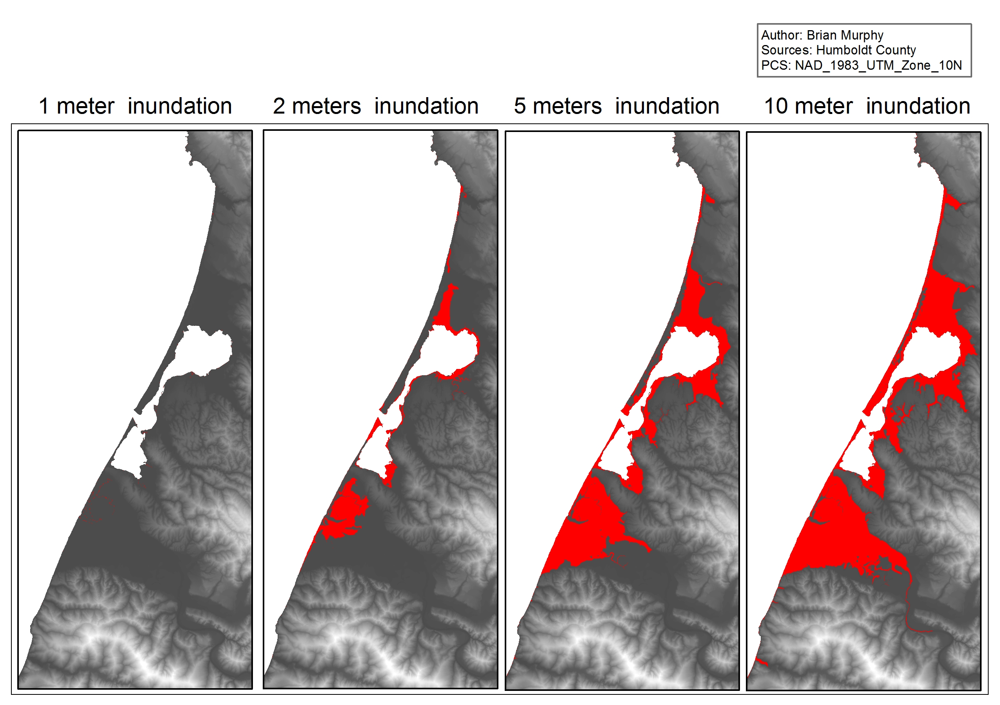
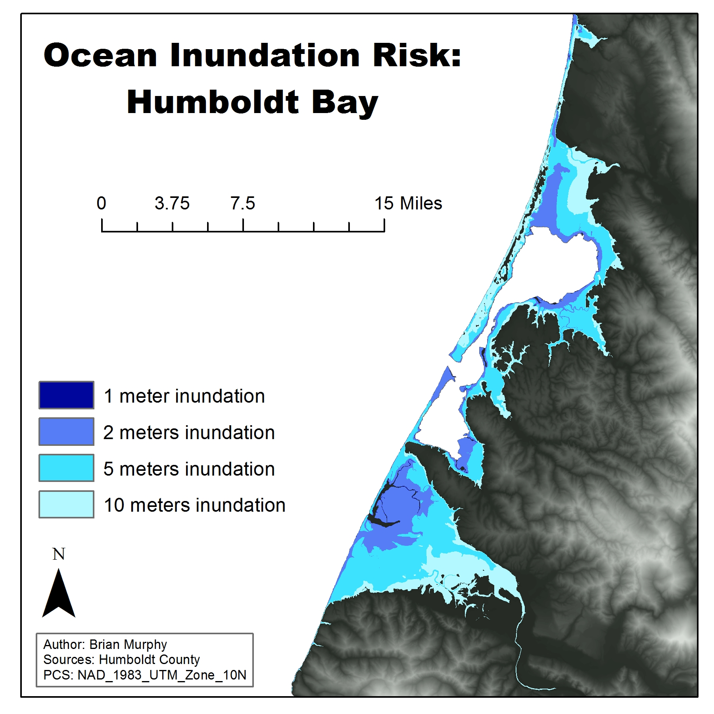
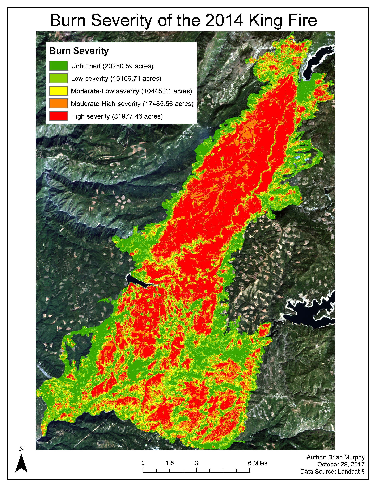

Brian Pellican Murphy
Student of Environmental Science and Geospatial Analysis at Humboldt State University
Geospatial analysis learned at HSU using Arc GIS. These maps were designed to display a certian set of data in ways that were most clear.

Projected levels of inundation for Humboldt Bay at 4 different levels of sea rise
Ocean inundation risk surrounding Humboldt Bay
This was a project performed for GSP 270 with Professor David Gwenzi at Humboldt State University. The goal of this project was to asses the extent of flooding in the Humboldt Bay region due to the potential effects of human induced climate change.

King Fire Burn Severity
Analysis of the intensity and extent of the King Fire which burned 97,000 acres of Ed Dorado County, California in 2014. To acomplish this analysis, the Normalized Burn Ratio (NBR) was calculated. These values were then classified to represent the burn severity. This project was performed for GSP 216 with Professor Sara Hanna.

Title
-Description of piece